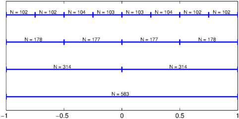
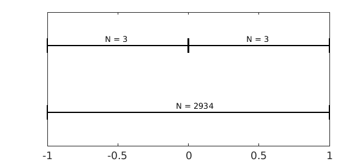
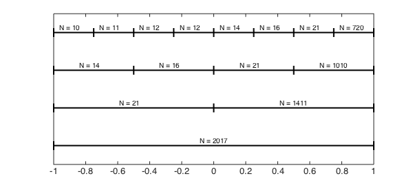

function AverageDegreeReduction1D
1D subdivision
Generally, Chebfun approximates globally smooth functions $f(x)$ by global polynomial interpolants [1]. However, in the roots command, if the degree of a chebfun is over $49$, the algorithm recursively subdivides, effectively representing $f(x)$ by a piecewise smooth polynomial before finding its roots [1,2]. For example, if one subdivision is required, instead of solving $f(x) = 0$ on $[-1,1]$, the algorithm solves $f_{left}(x) = 0$ on $[-1,r]$ and $f_{right}(x)=0$ on $[r,1]$, where $r$ is an arbitrary small constant. Furthermore, it continues to subdivide $f$ on smaller domains until it is of degree $49$ or less on each subinterval. The expectation is that if $f$ is of degree $n$, then $f_{left}$ and $f_{right}$ are of lower degree than $n$, but this is not always the case.
The average degree reduction in 1D
Let $\tau$ be a parameter that measures the average degree reduction of $f(x)$. That is, if $f(x)$ is of degree $n$, then $f_{left}$ and $f_{right}$ are of degree about $\tau n$. The parameter $\tau$ can be simply taken as $1/2$ as done in [3], but this is a simplification. We approximate $\tau$ by subdividing and calculating the degree reduction. The function we use to estimate $\tau$ is compute_tau (see below).
Oscillatory functions
For oscillatory functions the numerical degree of a chebfun closely follows Nyquist's rule, i.e., resolution requires on average $\pi$ points per wavelength when using Chebyshev points. When the interval is halved, the number of oscillations is halved and hence, the number of points to resolve the functions on each subinterval is also halved. Therefore, we expect $\tau$ to be approximately $1/2$. For example,
M = 5e2; f = @(x) sin(M*x); compute_tau(f, 2^3)
tau = 0.56216
Here is a diagram that shows the various degrees of the piecewise polynomial after the first three subdivisions.
subdivisionDiagram(f,3)

As $M\to\infty$, the function becomes more oscillatory and $\tau\to 1/2$.
Locally nonsmooth functions
Functions that are locally nonsmooth at a point on the interval but are smooth everywhere else can have an average degree reduction significantly less than $1/2$. This is especially true if the subdivision almost exactly isolates the difficult point. For instance,
f = @(x) abs(x).^3; compute_tau(f, 2) subdivisionDiagram(f,1)
tau = 0.00136

In this example the degree reduction after one subdivision makes $\tau\ll 1$. However, the subdivision within Chebfun subdivides $[-1,1]$ in $[-1,r]$ and $[r,1]$, where $r$ is an arbitrary constant so such small values for $\tau$ are rarely realised.
If the subdivision does not divide exactly on the point of discontinuity, then $\tau$ is just something less than $1/2$.
f = @(x) abs(x-.01).^7; compute_tau(f, 2^3)
tau = 0.33201
Analytic functions
For functions that are analytic on the real line with simple poles in the complex plane, Elliott's method [1] can be used to understand $\tau$. For example, consider the function $1/(x-1.0001)$.
f = @(x) 1./(x-1.0001); compute_tau(f, 8) subdivisionDiagram(f,3)
tau = 0.37094

This function is meromorphic in the complex $x$-plane with a simple pole at $x=1.0001$, and for these types of functions the Chebyshev coefficient are explicitly known (see [4,5]). In this case it can be shown that the numerical degrees of $f$ on the subinterval $[a,1]$, for $a = -1,0,1/2,1/4$, are the following integers:
for lvl = 1:4
c = 1.0001; % location of pole
a = 1-2.^(-lvl+1); b = 1; % interval
A = -(-2*c+b+a)/(b-a); % Elliott's formula
m(lvl) = ceil(log(-4*(a-c)*eps^(-1)/(b-a)/sqrt(A^2-1))...
./log(A+sqrt(A.^2-1)));
end
m = m'
m =
2068
1450
1017
713
The reason the numerical degrees found by Elliott's formula do not exactly match those found by Chebfun is that the Chebfun constructor has a varying tolerance, and the tail of the coefficients is not always truncated at the same level.
A globally difficult function
Some functions have values of $\tau$ larger than $1/2$, at least for the first few subdivisions. These functions tend to be difficult at many points on the interval. For example,
f = chebfun(@(x) abs(prod(x-linspace(-1,1,10)).^3),'vectorise'); compute_tau(f, 2)
tau = 0.70761
Conclusion
The average degree reduction parameter $\tau$ can take almost any value between $0$ and $1$. For functions that are equally difficult throughout the whole interval, $\tau$ is close to $1/2$. For functions that are difficult, local $\tau$ is often small. Therefore, one would expect that Chebfun's rootfinding algorithm would be more efficient at finding the roots of functions that have a small $\tau$. However, this is not the case, as the following two examples (of roughly the same size) show:
M = 2000; f = chebfun(@(x) sin(M*x)); % example with tau approximately 1/2. tic, roots(f); toc
Elapsed time is 0.807681 seconds.
c = -1.0001; f = chebfun(@(x) 1./(x+c)); % example with tau approximately 0.375 tic, roots(f); toc
Elapsed time is 1.445259 seconds.
The reason is that the overhead of each subdivision (as implemented) is high, and many more levels of subdivision are required for $1/(x+c)$.
Here are the functions used above to compute $\tau$ and plot the subdivision diagrams.
function compute_tau(f, N)
% COMPUTE_TAU estimate the average degree reduction parameter
d = [-1 1]; len = length(chebfun(f,d));
newends = d(1) + (0:N)./N*(d(2)-d(1));
newlen = length(chebfun(f, newends))/N;
tau = (newlen/len).^(1/log2(N));
fprintf('tau = %1.5f',tau)
end
function subdivisionDiagram(f, levels)
% SUBDIVISIONDIAGRAM draw a diagram to show subdivision and polynomial
% degrees.
g = chebfun(f);
LW = 'linewidth'; lw = 2;
for lvl = 0:levels
plot([-1 1],[lvl lvl],'k',LW,lw), hold on,
xx = linspace(-1,1,2^lvl+1);
newg = chebfun(f, xx); j = 1;
for x = xx(1:end-1)
plot([x x],[-.1 .1]+lvl,'k',LW,lw)
funs = newg.funs;
text(x+2.^(-lvl)-.09,lvl+.1,sprintf('N = %u',length(funs{j})-1));
j = j + 1;
end
plot([xx(end) xx(end)],[-.1 .1]+lvl,'k',LW,lw)
end
set(gca,'ytick',[])
set(gca,'yticklabel',[])
hold off
end
end
References
-
Z. Battels and L. N. Trefethen, An extension of MATLAB to continuous functions and operators, SIAM Journal on Scientific Computing, 25 (2004), pp.1743-1770.
-
J. P. Boyd, Computing zeros on a real interval through Chebyshev expansion and polynomial rootfinding, SIAM Journal on Numerical Analysis, 40 (2002), pp. 1666-1682.
-
J. P. Boyd, Finding the zeros of a univariate equation: Proxy rootfinders, Chebyshev interpolation, and the companion matrix, SIAM Review, 55 (2013), pp. 375-396.
-
D. Elliott, The evaluation and estimation of the coefficients in the Chebyshev series expansion of a function, Mathematics of Computation, 18 (1964), pp. 274-284.
-
M. Richardson, Exact Chebyshev expansion coefficients of a function, Chebfun Example, June 2012.